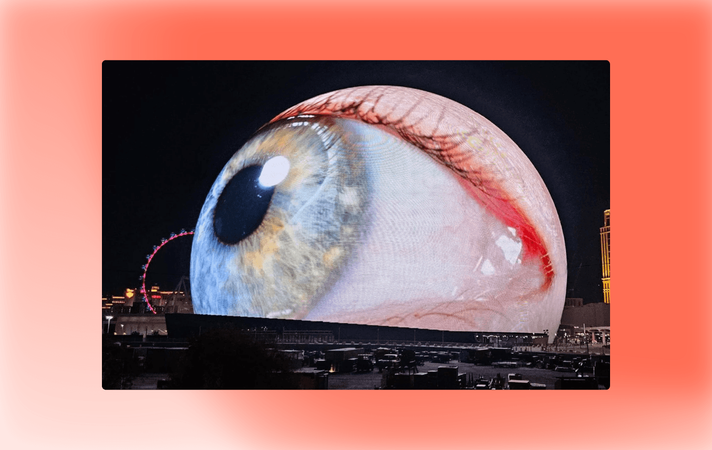

4 июля в Лас-Вегасе, США, открылась концертная площадка в виде 112-метровой сферы. Снаружи она представляет собой светодиодный экран площадью 54 000 м².
Миллион частиц на его поверхности могут превратить его в Луну, глазное яблоко, бейсбольный мяч, хеллоуинскую тыкву или самый большой рекламный щит в мире. Созданием экрана занимались SACO Technologies, а архитектурный проект разработали в компании Populous.
Кроме эстетической функции Сфера выполняет и свою первоначальную задачу: в её стенах регулярно проводятся концерты, а рок-группа U2 вообще сделала её постоянным местом своих выступлений.
